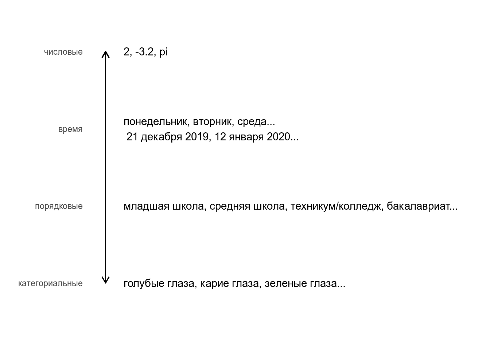
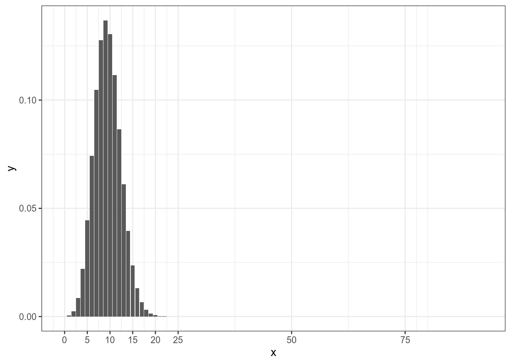
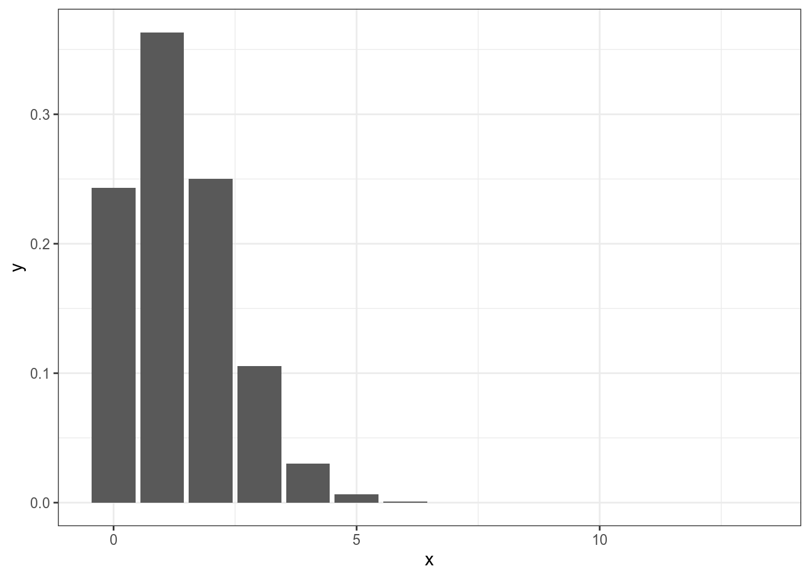
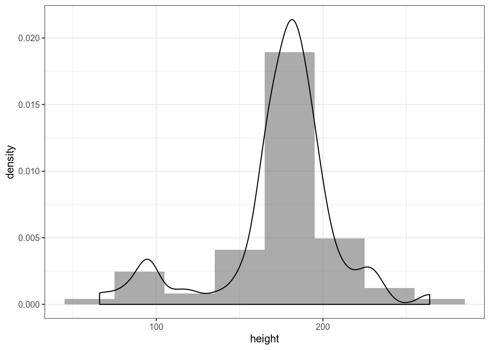
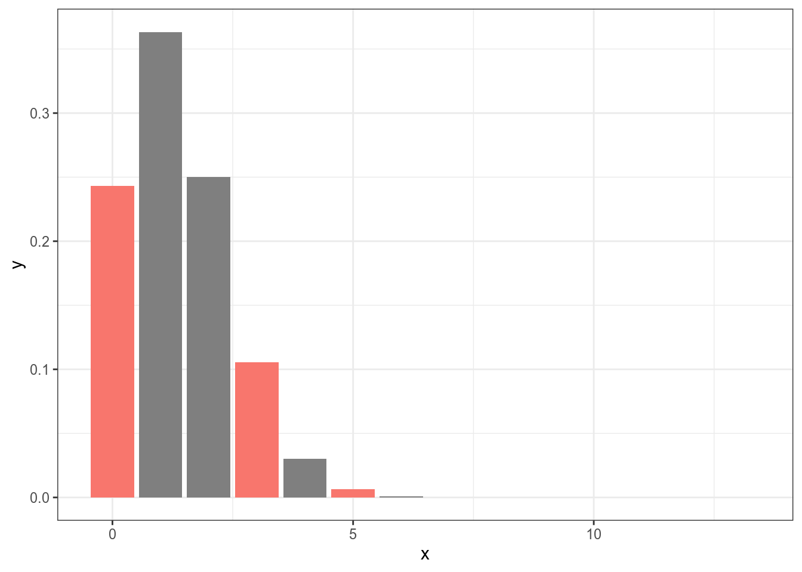
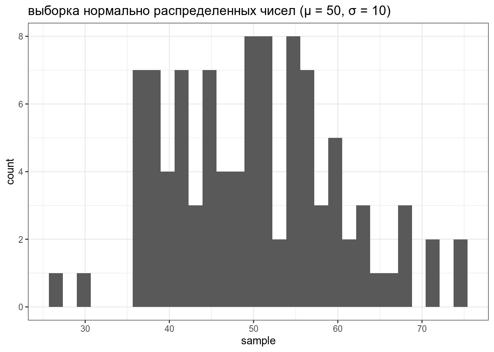

13 Описательная статистика, распределения
Мы обсуждали разные типы переменных:

В данном занятии мы сосредоточимся на категориальных и числовых переменных.
13.1 Описательная статистика
Описательная статистика — это общий термин, в который включают понятия позволяющие оценить тренд в данных.
13.1.1 Категориальные переменные
Для категориальных переменных описательных статистик не так много:
- количество
- частоты
- энтропия
Возьмем для примера датасет starwars. Мы легко можем посчитать количество существо разных расс:
Мы также легко можем посчитать долю существо разных расс:
Долю легко перевести в проценты:
Мы также легко можем посчитать энтропию. В том виде, как ее сформулировал Клод Шеннон, формула выглядит так:
\[H_b = -\sum_{i=1}^n p_i\times\log_2(p_i),\ где\]
- \(H_b\) — энтропия
- \(p_i\) — доля \(i\)-того независимого исхода из всех независимых исходов
starwars %>%
count(species, sort = TRUE) %>%
mutate(ratio = n/sum(n)) %>%
summarise(entropy = -sum(ratio*log2(ratio)))Что показывает эта мера? Рассмотрим следующий тиббл:
tibble(x = c("a", "a", "a", "a", "a", "a", "a", "a", "a", "a", "a", "b", "a", "b", "b", "c", "a", "a"),
group = rep(c("first", "second", "third"), each = 6),
id = rep(1:6, 3)) %>%
pivot_wider(names_from = group, values_from = x)Давайте посчитаем энтропию для каждой группы:
tibble(x = c("a", "a", "a", "a", "a", "a", "a", "a", "a", "a", "a", "b", "a", "b", "b", "c", "a", "a"),
group = rep(c("first", "second", "third"), each = 6)) %>%
count(group, x, sort = TRUE) %>%
group_by(group) %>%
mutate(ratio = n/sum(n)) %>%
summarise(entropy = -sum(ratio*log2(ratio)))Как видно, чем более разнообразна группа, тем выше энтропия. Посмотрим еще на такой тибл:
tibble(x = c("a", "a", "b", "a", "с", "a", "a", "b", "b", "c", "a", "a", "a", "b", "b", "c", "с", "a"),
group = rep(c("first", "second", "third"), each = 6),
id = rep(1:6, 3)) %>%
pivot_wider(names_from = group, values_from = x)tibble(x = c("a", "a", "b", "a", "с", "a", "a", "b", "b", "c", "a", "a", "a", "b", "b", "c", "с", "a"),
group = rep(c("first", "second", "third"), each = 6)) %>%
count(group, x, sort = TRUE) %>%
group_by(group) %>%
mutate(ratio = n/sum(n)) %>%
summarise(entropy = -sum(ratio*log2(ratio)))Как видно, чем “однороднее” группы, тем выше энтропия.
Влияет ли порядок следования элементов в векторе на значение энтропии?
Посчитайте значение энтропии для переменных clarity, color и cut из датасета diamonds. У какой переменной значение энтропии наибольшее?
13.1.2 Числовые переменные
Для числовых значений описательные статистики в целом предсказуемые:
diamonds %>%
summarise(mean = mean(price),
median = median(price),
quantile_0.5 = quantile(price, 0.5), # квантиль
quantile_0.25 = quantile(price, 0.25),
quantile_0.1 = quantile(price, 0.1),
min = min(price),
max = max(price),
var = var(price), # дисперсия
sd = sd(price)) # cреднеквадратическое отклонениеСмещенная оценка дисперсии выборки \(X = {x_1, x_2, ..., x_n}\):
\[\sigma^2 = \frac{1}{n}\sum_{i = 1}^n(x_i - \mu)^2,\ где\]
- \(x_i\) — i-тый элемент выборки X
- \(\mu\) — среднее
Несмещенная оценка дисперсии выборки \(X = {x_1, x_2, ..., x_n}\):
\[Var = \frac{1}{n-1}\sum_{i = 1}^n(x_i - \mu)^2\]
Вот ссылка на видео, в котором объясняется, почему первая оценка смещенная.
13.2 От частотности к вероятности
13.2.1 Категориальная переменная
Возьмем какой-нибудь простой случай двух взаимоисключающих исходов.
Какая доля имен героев начинается на букву B? Ответ округлите до 3 знаков после запятой
Мы получили такой результат на основании 9 успехов из 87 наблюдений. Но, что если они там еще чего-то наснимают? Какова вероятность, что в новом фильме будет герой на “B”, если предположить, что создатели стараются держать равновесие? 0.103? Но если там будет еще 5 новых героев, то полученная нами доля не будет иметь смысла, ведь (87+5)*0.103 = 9.476. Для ответа на такие вопросы обычно используют биномиальное распределение.
\[P(k | n, p) = \frac{n!}{k!(n-k)!} \times p^k \times (1-p)^{n-k} = {n \choose k} \times p^k \times (1-p)^{n-k}\]
\[ 0 \leq p \leq 1; n, k > 0,\ где\]
- n — общее число наблюдений
- k — число успехов
- p — предполагаемая исследователем вероятность успеха

Таким образом, если мы считаем вероятность 0.103 верной для данного процесса, то тогда вероятность увидеть 10 героев на букву “B” вероятнее, чем увидеть 5 или 17:

Теперь мы сделали шаг в сторону вероятностной модели: все что нужно знать, что случаи двух взаимоисключающих исходов следует моделировать при помощи биномиального распределения.
13.2.2 Числовая переменная
С числовой переменной все устроено похожим образом: дотплот, гистограмма, функция плотности.
`stat_bindot()` using `bins = 30`. Pick better value with `binwidth`.
`stat_bin()` using `bins = 30`. Pick better value with `binwidth`.
`stat_bindot()` using `bins = 30`. Pick better value with `binwidth`.starwars %>%
ggplot(aes(height))+
geom_histogram(alpha = 0.5, binwidth = 20)+
geom_dotplot(method="histodot")`stat_bindot()` using `bins = 30`. Pick better value with `binwidth`.starwars %>%
ggplot(aes(height))+
geom_histogram(alpha = 0.5, binwidth = 30)+
geom_dotplot(method="histodot")`stat_bindot()` using `bins = 30`. Pick better value with `binwidth`.
starwars %>%
ggplot(aes(height, y =..density..))+
geom_histogram(alpha = 0.5, binwidth = 30)+
geom_density()
Мы можем предположить, что генеральная совокупность можно описать нормальным распределением.
\[P(x) = \frac{1}{\sigma\sqrt{2\pi}}\times e^{-\frac{\left(x-\mu\right)^2}{2\sigma^2}}\]
\[\mu \in \mathbb{R}; \sigma^2 > 0,\ где\]
- — среднее
- — среднеквадратическое отклонение

13.2.3 Распределения
В R встроено какое-то количество известных распределений. Все они представлены четырьмя функциями:
d...(функция плотности, probability density function),p...(функция распределения, cumulative distribution function) — интеграл площади под кривой от начала до указанной квантилиq...(обратная функции распределения, inverse cumulative distribution function) — значение p-той квантили распределения- и
r...(рандомные числа из заданного распределения).
Рассмотрим все это на примере нормального распределения.
tibble(x = 1:100,
PDF = dnorm(x = x, mean = 50, sd = 10)) %>%
ggplot(aes(x, PDF))+
geom_point()+
labs(title = "PDF нормального распределения (μ = 50, σ = 10)")
tibble(x = 1:100,
CDF = pnorm(x, mean = 50, sd = 10)) %>%
ggplot(aes(x, CDF))+
geom_point()+
labs(title = "CDF нормального распределения (μ = 50, σ = 10)")tibble(quantiles = seq(0, 1, by = 0.01),
value = qnorm(quantiles, mean = 50, sd = 10)) %>%
ggplot(aes(quantiles, value))+
geom_point()+
labs(title = "inverse CDF нормального распределения (μ = 50, σ = 10)")tibble(sample = rnorm(100, mean = 50, sd = 10)) %>%
ggplot(aes(sample))+
geom_histogram()+
labs(title = "выборка нормально распределенных чисел (μ = 50, σ = 10)")
Если не использовать set.seed(), то результат работы рандомизатора нельзя будет повторить.
Аналогично можно использовать функции dbinom(), pbinom(), qbinom() и rbinom() для биномиального распределения, а также ..t() для распределения Стьюдента, ...chisq() для распределения хи-квадрат и т. п.
Биномиальное и нормальное распределения не единственные распределения, которые придумали люди:
- вот ресурс, на котором сделана попытка собрать все распределения и визуализировать связи между ними;
- вот приложение, позволяющие исследовать разные распределения.